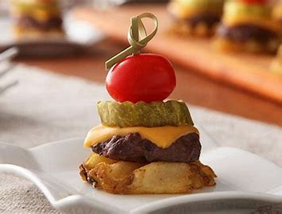

Burger & Fries Appetizer

A small fried burger, often served as an appetizer, is a delightful and flavorful bite-sized treat that packs all the deliciousness of a regular-sized burger into a compact package. Despite its small size, it doesn't compromise on taste and delivers a satisfying burst of flavors.
- 1/2 lb. lean ground beef
- 12 ORE-IDA Waffle Fries
- 3 KRAFT Singles, quartered
- 12 CLAUSSEN Bread 'N Butter Pickle Chips
- 12 grape tomatoes
- Heat oven to 425ºF.
- Shape meat into 12 (1-1/2-inch) patties; place on foil-covered rimmed baking sheet.
- Place waffle fries in single layer on second foil-covered baking sheet.
Bake as directed on package, adding baking sheet with patties to oven for the last 13 min.
of the fries baking time and baking until burgers are done (165ºF).
- Place burgers on top of fries; top with Singles pieces. Bake 1 min. or until Singles are melted.
- Transfer fries to serving plate; top with pickles and tomatoes. Secure with decorative skewers or picks.